演示站内容包「环保过滤」的整套品牌素材：标志全套、站点图标、社交分享图、页面装饰、导航图标、代码片段与页面状态图，共 88 个文件 · 约 4.92 MB（含本页与 README）。点任意卡片可复制该文件的相对路径；规则看同目录 README.md，全系统规范看素材库根目录的 USAGE.md。
主标志全套 SVG：部件（底牌+图形 / 中文字 / 英文字）由系统母版拆件重组，与演示站页头逐像素一致。浅底用主版，深底用 03 的反白版。
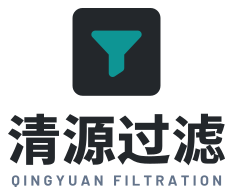
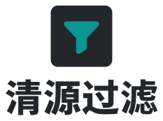
01 的高清渲染版，给 Office、印刷与外包直接用；另有反白位图在 03。点页签切换。
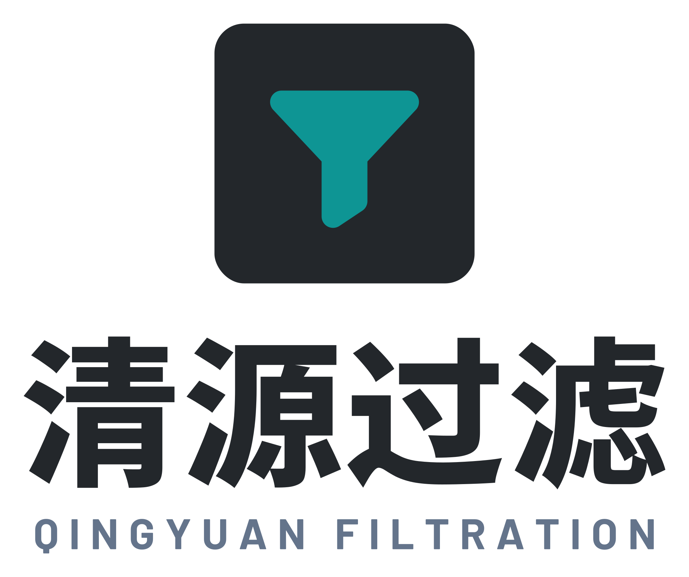
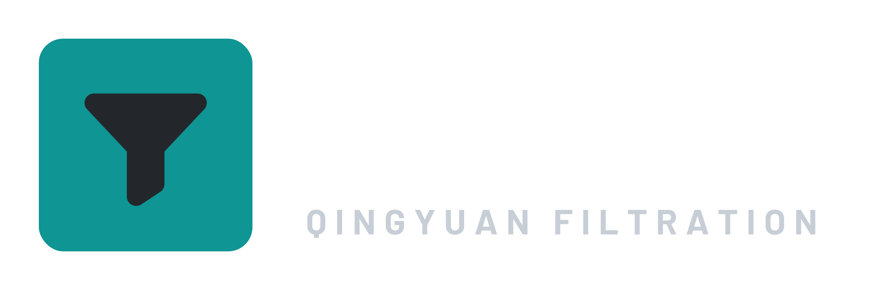
02 共 7 件：图形 1024px、中文标准字 / 英文标准字 / 横版-中文 / 横版全标 各 2400px、竖版-中文 / 竖版全标 各 2000px，均为透明底 PNG。
反白版只上深色背景，必须用真反白文件；单色版用于灰度印刷、文档页眉与合作方 logo 墙。
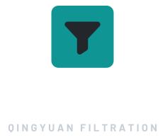
每色另有图形版 SVG；反白另有英文标准字 SVG 与 4 件 PNG（横版 2400 / 竖版 2000 / 图形 1024 / 中文标准字 2000），全在 03 目录。
浏览器与设备图标全套。16px / 32px 为实测定的小尺寸版：品牌色图形占满画布（无底牌），48px 起为底牌版；ICO 内含 16 / 32 / 48 三尺寸。引用代码在 08。
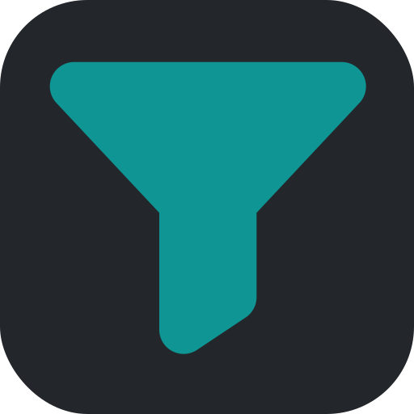
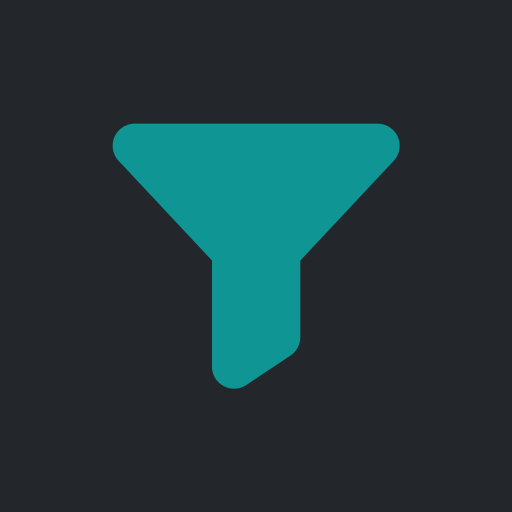
链接被转发到微信、微博、X、Facebook 时显示的卡片图。深色版已在 08 的 head 片段里设为默认 og:image。
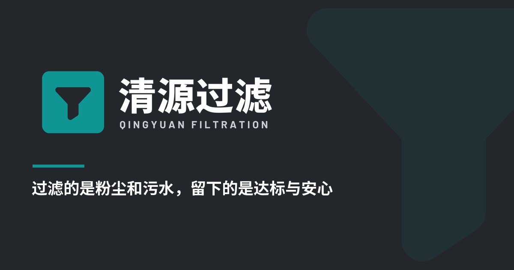
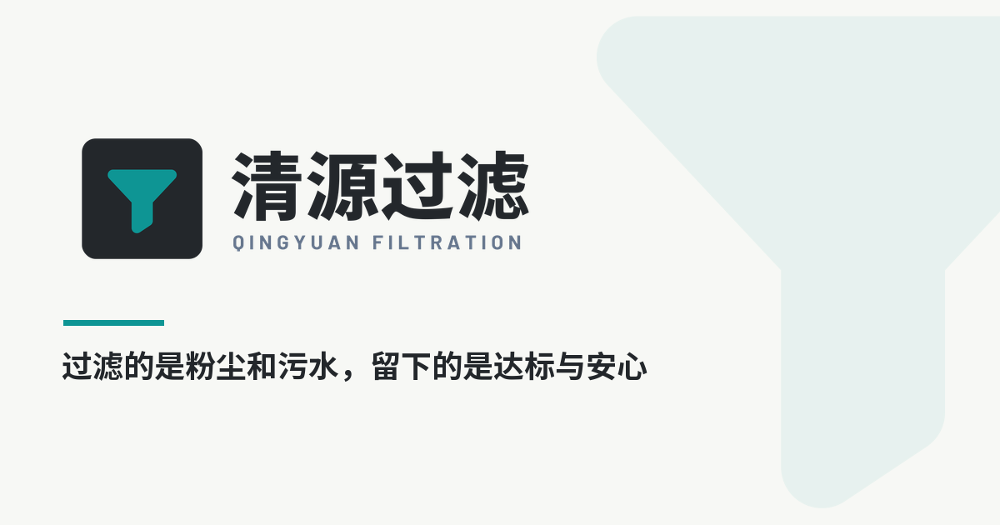
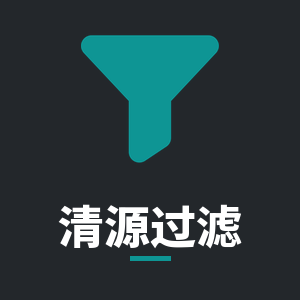
底图来自本包图包的 hero 照片（演示用图，正式交付换客户实拍）。带标版是排好标志与口号的成品图，无标版留给页面自己排字。
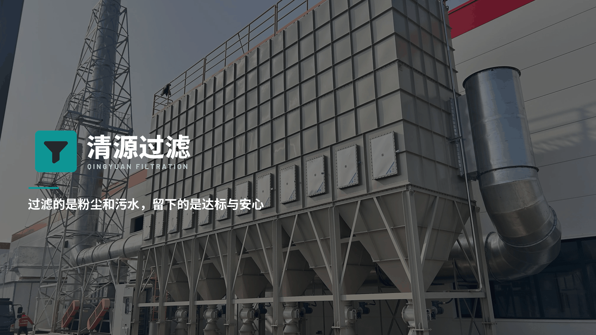
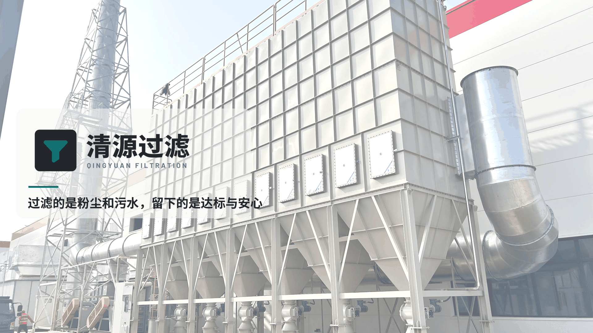
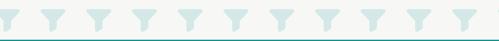
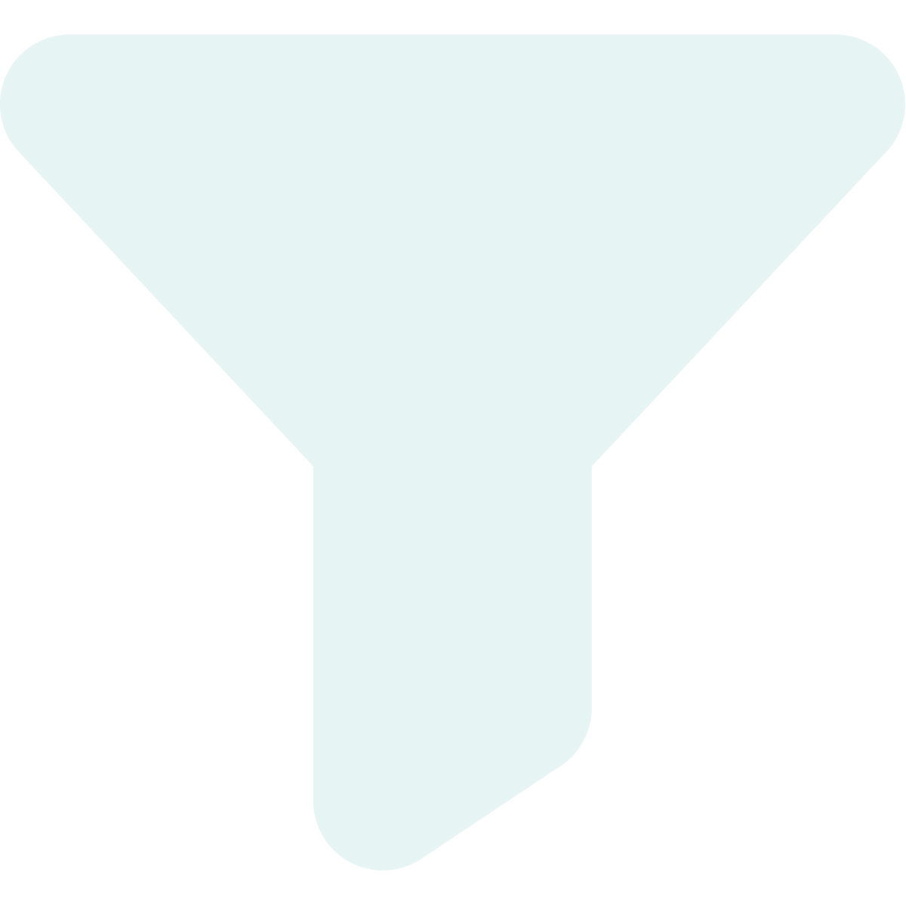
纹理-funnel-512.png 平铺效果（图形母题 10% 透明）：
Phosphor regular 描边款，24px 网格、currentColor 随字色变色；最后一件是本包的行业图标。点卡片复制路径。
三件都在 08-代码片段 目录：品牌变量是全站唯一取值来源；head 片段整段贴进页面 <head>；页头示例可直接打开看效果。
/* ============================================================
清源过滤 QINGYUAN FILTRATION · 品牌变量（全站唯一取值来源，别在页面里写死色值）
品牌色 #0E9594（青绿）/ 深炭 #23272B / 纸色 #F7F8F5
配套：08-代码片段/favicon-seo-head.html
============================================================ */
:root {
/* —— 品牌 —— */
--qy-brand: #0E9594; /* 主品牌色：图形标、强调、悬停、数据高亮 */
--qy-brand-dark: #0B7776; /* 品牌深色（派生：主色明度 ×0.8）：链接、按钮悬停 */
--qy-brand-soft: #E2F2F2; /* 品牌浅色（派生：主色与白混合 88%）：标签底、浅色区块 */
/* —— 中性（与全站演示系统共用） —— */
--qy-ink: #23272B; /* 主文字、深炭底牌 */
--qy-ink-2: #4A5058; /* 次级文字 */
--qy-muted: #7C8590; /* 弱化文字（英文副标 #64748B 近似档） */
--qy-paper: #F7F8F5; /* 页面浅底 */
--qy-line: #E3E6E1; /* 分隔线、卡片描边 */
--qy-deep: #23272B; /* 深色区块底 */
--qy-deep-2: #2E3338; /* 深色区块里的卡片 */
/* —— 标志尺寸（全站统一，别逐页改） —— */
--qy-logo-h: 42px; /* 桌面页头横版全标高（40–44 区间） */
--qy-logo-h-mobile: 26px; /* 移动端页头高（此时用横版-中文版，见 README） */
/* —— 字体 —— */
--qy-font: "Noto Sans SC", "Source Han Sans SC", "PingFang SC",
"Microsoft YaHei", sans-serif;
--qy-font-en: "Barlow", "Noto Sans SC", sans-serif;
}
body { font-family: var(--qy-font); color: var(--qy-ink); background: var(--qy-paper); }
a { color: var(--qy-brand-dark); }
::selection { background: var(--qy-brand); color: var(--qy-ink); }
/* 页头标志：高度由变量控制，宽度按比例自适应 */
.qy-logo img { height: var(--qy-logo-h); width: auto; display: block; }
@media (max-width: 640px) { .qy-logo img { height: var(--qy-logo-h-mobile); } }
/* 深色页头换反白版文件，不要给彩色版套滤镜 */
.qy-on-dark { background: var(--qy-deep); color: #FFF; }
/* 按钮：主按钮深炭底，悬停转品牌深色 */
.qy-btn-primary { background: var(--qy-ink); color: #FFF; border: 0; cursor: pointer;
padding: 12px 26px; border-radius: 8px; font: 600 15px/1 var(--qy-font); }
.qy-btn-primary:hover { background: var(--qy-brand-dark); }<!-- ===== 清源过滤 · 站点图标与 SEO / 分享（本包 04-站点图标、05-社交分享） ===== --> <!-- 部署时把 04-站点图标 内的文件放进站点根目录，下面的根路径即生效 --> <link rel="icon" href="/04-站点图标/favicon.ico" sizes="any"> <link rel="icon" type="image/svg+xml" href="/04-站点图标/favicon.svg"> <link rel="icon" type="image/png" sizes="32x32" href="/04-站点图标/favicon-32.png"> <link rel="icon" type="image/png" sizes="16x16" href="/04-站点图标/favicon-16.png"> <link rel="apple-touch-icon" sizes="180x180" href="/04-站点图标/apple-touch-icon-180.png"> <link rel="mask-icon" href="/04-站点图标/safari-pinned-tab.svg" color="#0E9594"> <meta name="theme-color" content="#23272B"> <title>清源过滤 · 苏州清源过滤科技有限公司</title> <meta name="description" content="过滤的是粉尘和污水，留下的是达标与安心——苏州清源过滤科技有限公司（QINGYUAN FILTRATION）官方网站。"> <meta property="og:type" content="website"> <meta property="og:site_name" content="清源过滤"> <meta property="og:title" content="清源过滤 · 苏州清源过滤科技有限公司"> <meta property="og:description" content="过滤的是粉尘和污水，留下的是达标与安心"> <meta property="og:image" content="https://www.example.com/05-社交分享/og-1200x630-深色.png"> <meta property="og:image:width" content="1200"> <meta property="og:image:height" content="630"> <meta name="twitter:card" content="summary_large_image">
<!DOCTYPE html>
<html lang="zh-CN">
<head>
<meta charset="UTF-8">
<meta name="viewport" content="width=device-width, initial-scale=1">
<title>页头示例 · 清源过滤</title>
<style>
body { margin:0; font-family:"Noto Sans SC","PingFang SC","Microsoft YaHei",sans-serif; color:#23272B; background:#F7F8F5; }
.bar { display:flex; align-items:center; gap:34px; padding:12px 28px; background:#FFF; border-bottom:1px solid #E3E6E1; }
.bar.dark { background:#23272B; border-bottom:0; margin-top:26px; }
.bar img { height:40px; width:auto; display:block; } /* 全站页头标志高 40px（规范 40–44） */
nav { display:flex; gap:24px; font-size:15px; }
nav a { color:inherit; text-decoration:none; }
.bar.dark nav { color:#FFF; }
.note { padding:14px 28px; font-size:13px; color:#7C8590; }
</style>
</head>
<body>
<!-- 浅色页头：横版-中英全标主版 -->
<div class="bar">
<img src="../01-标志-矢量/标志-横版-中英全标.svg" alt="清源过滤 QINGYUAN FILTRATION">
<nav><a>首页</a><a>产品中心</a><a>应用行业</a><a>关于我们</a><a>新闻资讯</a><a>联系我们</a></nav>
</div>
<!-- 深色页头：换反白版文件，不要给彩色版套 CSS 滤镜 -->
<div class="bar dark">
<img src="../03-单色与反白/反白-横版-中英全标.svg" alt="清源过滤 QINGYUAN FILTRATION">
<nav><a>首页</a><a>产品中心</a><a>应用行业</a><a>关于我们</a><a>新闻资讯</a><a>联系我们</a></nav>
</div>
<p class="note">高度低于 40px（如移动端 26px）时，改用「标志-横版-中文.svg」——英文小字在小尺寸下会糊。图形标单独出现时用「标志-图形.svg」。</p>
</body>
</html>404、空状态与图片占位图：以本包图形母题与品牌色构成，深炭 + 品牌色双色；反白版供深色页面。
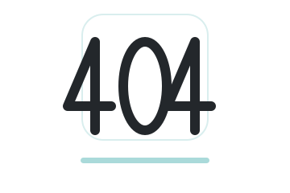
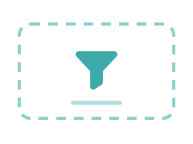
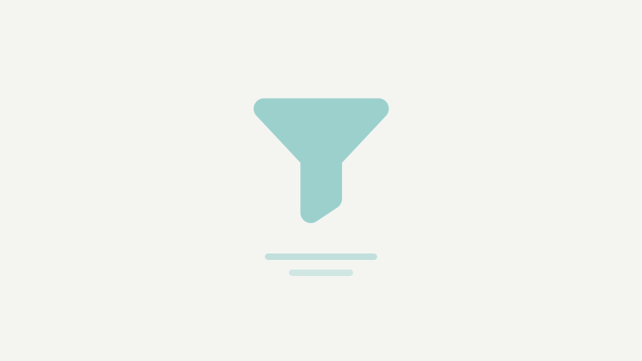